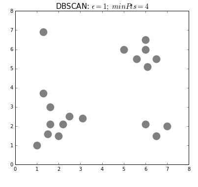

This blog consists of notes from the notebook I prepared for a recitation I conducted in Sabanci University when I was a teaching assistant of the machine learning course.
What is Clustering?
- Put simply: Grouping examples based on their similarities, without any label.
- Wikipedia : Cluster analysis or clustering is the task of grouping a set of objects in such a way that objects in the same group (called a cluster) are more similar (in some sense) to each other than to those in other groups (clusters).
Types of Clustering
There are several approaches developed for different clustering problems. For a detailed study, please take a look at link . Below given the mostly used algorithms.
Centroid based
Wikipedia: Each cluster is represented by a central vector, which is not necessarily a member of the data set. Most common centroid based clustering algorithm is K-Means.
K-Means:
- Specify number of clusters.
- Initiliaze cluster centers randomly (for a better version, see K-Means++)
- Assign each data point to its nearest cluster center
- Revise cluster centers as the center of the datapoints belonging to that cluster
- Repeat 3rd and 4th steps until convergence (???, either A or B, below)
- The iteration will stop when the maximum number of iterations is reached
- The change of within-cluster sum of squares in two successive iterations is less than the threshold value.

Pros:
1. Easy to understand & implement
2. Efficient
3. Adaptible to large datasets
Cons:
1. Requires # of clusters explicitly
2. Troubled with finding clusters of varying size and densities
3. Careful initialization needed, most of the time
Density based
GeeksforGeeks: Clusters are dense regions in a data space, separated by regions of the lower density of points.
One of the mostly used density based algorithm is DBSCAN (Density-based spatial clustering of applications with noise). DBSCAN connects points within a certain region, which is defined by a radius, if there are enough number of points.
DBSCAN:
- For each observation, look around their neighbours defined by eps value.
- If there are at least minPts observations in that neighbourhood, mark this observation as Core point.
- Otherwise, mark this observation as Non-Core point.
- Then, starting from a core point:
- Include all the core points within the neighbourhood of the start core point.
- Include all the other core points within the neighbourhoods of the core points included into the cluster.
- After adding all the core points into the cluster:
- Include all the non-core points within neighbourhood of the core points of the cluster.
- If there are no reachable observations from the core points of the cluster:
- Repeat the steps 2-4 through unvisited observations to find other clusters.
- Algorithm finishes when there is no unvisited observation.

Pros:
1. Able to discover arbitrarily shaped clusters
2. Robust to detecting outliers
3. No need of specifying # clusters
Cons:
1. Require two hyperparameters: eps and minPts
2. Sensitive to these hyperparameters
Distribution based
Google Course: This clustering approach assumes data is composed of distributions, such as Gaussian distributions.
Clusters are defined as the objects belonging to the same probability distributions.
Example below shows three clusters as Gaussian distributions. Bands around the centers of the distributions indicate the probability of the data points to be in that distribution; as the distance of a point to the center increases the probability for the point to belong to the cluster decreases.
Works best for synthetically generated data since they are usually drawn from distributions.

Hierarchical
This type of clustering is also known as connectivity-based clustering.
Wikipedia: This clustering method is based on the idea of objects being more related to nearby objects than to objects farther away. This connects “objects” to form “clusters” based on their distance.
Two types of strategies:
- Agglomerative:
- Initially, each data point is a cluster itself.
- Then, combines nearest clusters as new clusters.
- Continue until:
- There are specified number of clusters
- All clusters combined into one
- Divisive:
- Initially, all data points are in one cluster.
- Split the cluster or clusters into two, dissimilar clusters.
- Continue until there are specified number of clusters.

Pros:
1. No need of # clusters explicitly
2. Easy to understand & implement
2. Dendograms provide insights about the data & clusters
Cons:
1. Sensitive to noisy data (e.g. with single linkage)
2. Requires careful design of linkage method and distance matrix.
3. Trouble with larger dimensional and/or bigger data